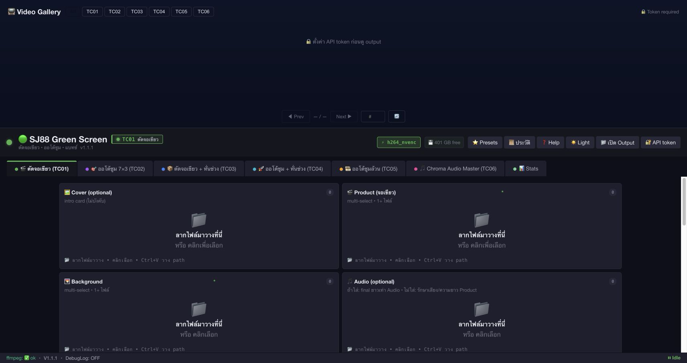
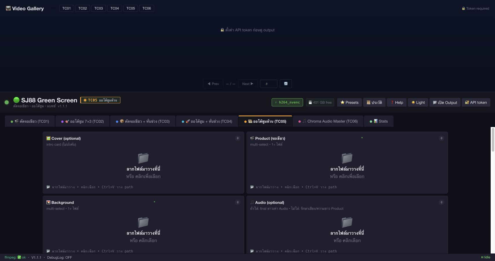
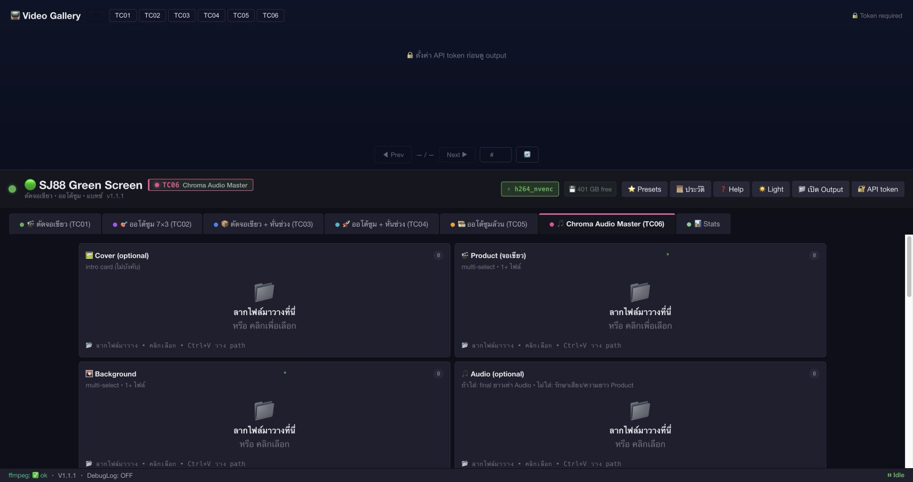
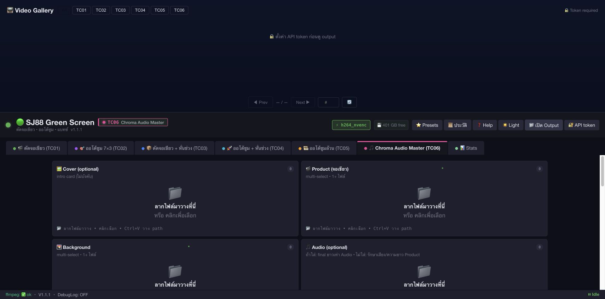
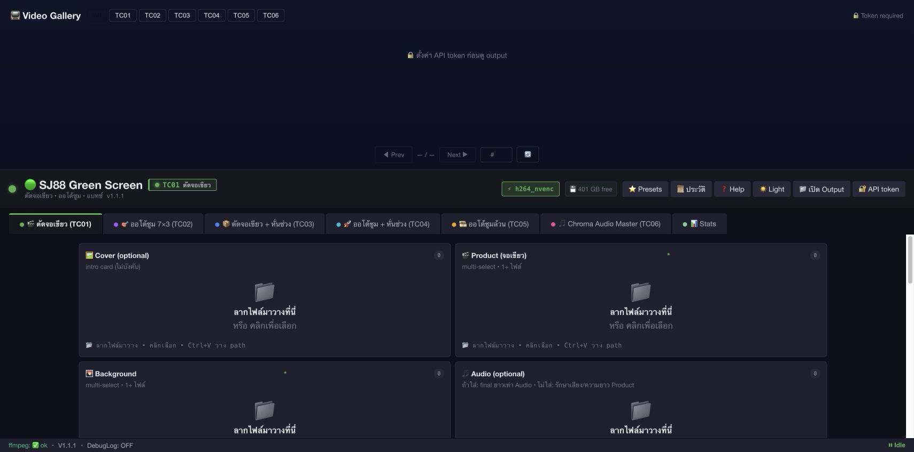

Green Cutdee: Upload → Worker → Job → Download
Verdict: STUDY_COMPLETE_WITH_SCOPE_NOTE — functional upload/render/download = NOT_EVALUATED
Project identity
- Project: green.cutdee.com
- Repo: /Users/sj88/Documents/codex/V3_cursor_API
- Environment: production, read-only study
- UI: V1.1.1; Gateway: 1.2.0; commit: f6299fa
- Public UI: green.cutdee.com
- OpenAPI: /v3api/openapi.json
- AI Full Dev activities: 12082, 12084, 12086 — recorded and closed via API
คำตอบสั้นที่สุด
ไฟล์เข้า Browser → Nginx → Gateway บน dedicated server 103.253.75.161 → worker ที่ health ผ่านและโหลดต่ำสุด → FFmpeg. เครื่องที่ทำจริงจึงเปลี่ยนได้ตาม worker selection.
หลังคลิก Render ให้จด job_id แล้วเรียก authenticated GET /api/job/<JOB_ID>; ฟิลด์ worker_id คือจุดเริ่มต้นในการ map ไปยังเครื่องใน registry. UI ยังไม่แสดง worker id ต่อ job.
เมื่อเสร็จ UI ดาวน์โหลด /api/job/<JOB_ID>/output อัตโนมัติ; TC02–TC06 ดาวน์โหลด ZIP จาก /api/job/<JOB_ID>/download-all. Output page อยู่ที่ /outputs/ และต้องมี token/session.
Flow ที่ยืนยันจาก source/deploy
Browser FormData → Nginx /api/ → 127.0.0.1:8788 → Gateway auth + stage /var/lib/v3-cursor-api/gateway/uploads → choose enabled healthy worker → INSERT PostgreSQL v3_jobs → worker /v1/jobs/<job>/upload/<role> → worker /v1/<tc>/render/<job> → worker job dir + pipeline + FFmpeg → gateway monitor /v1/jobs/<job>/status → browser poll/WS + output download
Worker snapshot ล่าสุด
| Registry id | Endpoint / เครื่อง | สถานะ | Encoder |
|---|---|---|---|
| i9-64gb-cpu-01 | Dedicated 103.253.75.161, loopback 127.0.0.1:8789 | enabled + healthy | libx264; self-id server-cpu-01 |
| sj88-rtx5060ti-01 | 110.164.146.205:8789 | disabled in final registry | h264_nvenc when directly probed |
| m4-mlx | 103.253.73.29:55520 | enabled + healthy | h264_videotoolbox |
| sj88ai-rtx2050-01 | 103.253.73.29:55522 | enabled but unhealthy | no response in final probe |
| sjnb3050ti-rtx3050 | 103.253.73.29:55523 | enabled + healthy | h264_nvenc |
Final closeout aggregate: enabled 4, healthy 3, configured 5, disabled 1. Registry changed repeatedly during the study; the final hash is recorded in the source logs.
UI evidence
ไม่อัปโหลดไฟล์และไม่ใส่ token. หน้าแรกแสดง Product/Background required, TC05 source-only, TC06 Product+Background+Audio, และ output token guard.





Checkpoint aliases: 01_open_page, 02_input_ready, 03_click_generate, 04_result_state, 05_audio_ready_or_error. These are guard/contract observations, not a completed render.
{kind=link}
{kind=link}
{kind=link}
{kind=link}
{kind=link}
Paired test gates
| Testcase | API result | Pair | Verdict |
|---|---|---|---|
| STUDY-TC01 home + health | HTTP 200 | complete | PASS_WITH_SCOPE_NOTE |
| STUDY-TC05 contract + OpenAPI | HTTP 200 | complete | PASS_WITH_SCOPE_NOTE |
| STUDY-TC06 auth guard | HTTP 401 without auth | complete | PASS_WITH_SCOPE_NOTE |
| STUDY-TC07 output guard | HTTP 401 without auth | complete | PASS_WITH_SCOPE_NOTE |
| STUDY-TC08 cluster health | HTTP 200 | complete | PASS_WITH_SCOPE_NOTE |
| STUDY-TC09 closeout health/drift | HTTP 200 | complete | PASS_WITH_SCOPE_NOTE |
- Pair completeness: 6/6 = 100%
- Pair consistency: 6/6 = 100%
- Checks: 30/30
- Critical errors: 0
- Real upload/render/output download: NOT_EVALUATED